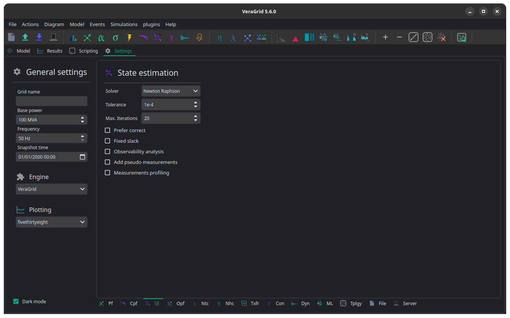

🌀 State estimation
State estimation in VeraGrid reconstructs the electrical state of the network from measurements instead of assuming that all bus injections and branch conditions are perfectly known.
Its objective is to infer the most likely bus voltages, angles, flows, and injections that best fit the available measurements.
This is the standard study to use when the network model is known but the real-time operating point is only partially observed through telemetry.

What The Study Evaluates
The state estimation study combines:
the network model
the available measurements
the measurement uncertainty
to estimate:
bus voltage magnitudes
bus voltage angles
bus active and reactive injections
branch active and reactive flows
branch currents, loading, and losses
Unlike a standard power flow, the operating point is not prescribed directly from deterministic injections. Instead, it is inferred from the measurement set.
Supported Measurements
The driver collects measurements already attached to the network model.
The current implementation supports:
bus active power injection measurements
bus reactive power injection measurements
generator active power measurements
generator reactive power measurements
bus voltage magnitude measurements
bus voltage angle measurements
branch active power flow measurements on the from side
branch active power flow measurements on the to side
branch reactive power flow measurements on the from side
branch reactive power flow measurements on the to side
branch current magnitude measurements on the from side
branch current magnitude measurements on the to side
Each measurement carries both:
a measured value
a standard deviation or uncertainty
That uncertainty is essential because the estimator weighs measurements according to their confidence.
Observability
A state estimator can only recover the network state if the measurement set is sufficiently informative.
This is the observability problem:
if the system is observable, the estimator has enough information to solve for the state
if the system is not observable, some buses or variables cannot be uniquely inferred from the available measurements
VeraGrid can run an observability analysis before solving the estimator. When enabled, the driver can:
detect unobservable buses
profile the contribution of measurements
optionally add pseudo-measurements for unobservable buses
This is especially useful when building new telemetry sets or validating whether a measurement configuration is sufficient for state estimation.
Pseudo-Measurements
If the network is not fully observable, VeraGrid can augment the measurement set with pseudo-measurements.
Pseudo-measurements are synthetic measurements, usually with a relatively high uncertainty, that help make the system observable enough to solve.
They are useful when:
some buses have no direct telemetry
the measurement set is incomplete
a practical solution is preferred over rejecting the case as unobservable
The driver records the pseudo-measurements it injects so they can be inspected later through the convergence reports.
Solvers
The state estimation driver currently supports several numerical solvers through StateEstimationOptions:
SolverType.NR: Newton-RaphsonSolverType.LM: Levenberg-MarquardtSolverType.GN: Gauss-NewtonSolverType.Decoupled_LU: decoupled state estimation
In general:
use Newton-Raphson as the default robust choice
use Levenberg-Marquardt when a damped method is preferred
use Gauss-Newton for the classical least-squares style formulation
use Decoupled when a faster approximate approach is acceptable
Main Options
The main state estimation options are:
solver: numerical method used to solve the estimatortol: convergence tolerancemax_iter: maximum number of iterationsverbose: solver verbosityprefer_correct: whether correction is preferred over measurement deletion in bad-data handling logicc_threshold: confidence threshold used in bad-data related logicfixed_slack: whether slack-bus measurements are omitted from the formulationrun_observability_analyis: enables observability analysis before estimationadd_pseudo_measurements: injects pseudo-measurements when unobservable buses are detectedrun_measurement_profiling: enables measurement contribution profilinginclude_line_measurements_on_both_ends: controls how line-end measurements are considered during observability analysispseudo_meas_std: standard deviation assigned to created pseudo-measurements
Result Object
The study returns a StateEstimationResults object.
It exposes the estimated electrical state through arrays and convenience methods.
Main result arrays include:
voltageSbusSf,StIf,Itloadinglosses
Convenience methods include:
get_bus_df()get_branch_df()get_report_dataframe(island_idx=0)
The result object also stores convergence_reports, one per island, which contain:
convergence status
error
elapsed time
iteration count
bad-data detection status
observability status
unobservable buses
pseudo-measurements
measurement profiling information
Interpretation Notes
A converged solution does not automatically mean the measurement set was good; always inspect observability and bad-data information as well.
If pseudo-measurements were needed, the estimate is usable but less grounded in direct telemetry.
If the network splits into islands, each island is solved separately and has its own convergence report.
The quality of the estimate depends strongly on both the placement and the uncertainty values of the measurements.
Registered Result Properties
StateEstimationResults registered properties
The state-estimation result stores estimated network quantities and bad-data status.
Property |
Type |
Description |
|---|---|---|
|
|
Names aligned with bus-indexed result arrays. |
|
|
Names aligned with branch-indexed result arrays. |
|
|
Names aligned with HVDC line-indexed result arrays. |
|
|
Names aligned with generator-indexed result arrays. |
|
|
Names aligned with battery-indexed result arrays. |
|
|
Names aligned with shunt-indexed result arrays. |
|
|
Bus type code used by the solved numerical model. |
|
|
Branch from-bus index for each branch. |
|
|
Branch to-bus index for each branch. |
|
|
HVDC from-bus index for each HVDC line. |
|
|
HVDC to-bus index for each HVDC line. |
|
|
Area index assigned to each bus. |
|
|
Area names or area identifiers used for inter-area aggregation. |
|
|
Complex bus power injection. |
|
|
Complex bus voltage solution. |
|
|
Complex branch power flow at the from side. |
|
|
Complex branch power flow at the to side. |
|
|
Complex branch current at the from side. |
|
|
Complex branch current at the to side. |
|
|
Transformer tap module used in the solved state. |
|
|
Transformer tap angle used in the solved state. |
|
|
Complex branch voltage result used by branch reports. |
|
|
Branch loading result. |
|
|
Complex branch losses. |
|
|
Losses result. |
|
|
Registered result field |
|
|
Registered result field |
|
|
Loading result. |
|
|
Losses result. |
|
|
VSC result field |
|
|
Complex branch power flow at the to side. |
|
|
Complex branch current at the from side. |
|
|
Complex branch current at the to side. |
|
|
Loading result. |
|
|
Generator reactive power output. |
|
|
Battery reactive power output. |
|
|
Shunt reactive power output. |
|
|
Flag indicating whether bad data was detected by the estimator. |
API
The following example is based on the classic three-bus reference from A. Monticelli’s book.
import VeraGridEngine as gce
m_circuit = gce.MultiCircuit()
b1 = gce.Bus('B1', is_slack=True)
b2 = gce.Bus('B2')
b3 = gce.Bus('B3')
br1 = gce.Line(b1, b2, name='Br1', r=0.01, x=0.03, rate=100.0)
br2 = gce.Line(b1, b3, name='Br2', r=0.02, x=0.05, rate=100.0)
br3 = gce.Line(b2, b3, name='Br3', r=0.03, x=0.08, rate=100.0)
# add measurements
m_circuit.add_pf_measurement(gce.PfMeasurement(0.888, 0.008, br1))
m_circuit.add_pf_measurement(gce.PfMeasurement(1.173, 0.008, br2))
m_circuit.add_qf_measurement(gce.QfMeasurement(0.568, 0.008, br1))
m_circuit.add_qf_measurement(gce.QfMeasurement(0.663, 0.008, br2))
m_circuit.add_pi_measurement(gce.PiMeasurement(-0.501, 0.01, b2))
m_circuit.add_qi_measurement(gce.QiMeasurement(-0.286, 0.01, b2))
m_circuit.add_vm_measurement(gce.VmMeasurement(1.006, 0.004, b1))
m_circuit.add_vm_measurement(gce.VmMeasurement(0.968, 0.004, b2))
m_circuit.add_bus(b1)
m_circuit.add_bus(b2)
m_circuit.add_bus(b3)
m_circuit.add_line(br1)
m_circuit.add_line(br2)
m_circuit.add_line(br3)
se = gce.StateEstimationDriver(circuit=m_circuit)
se.run()
print(se.results.get_bus_df())
print(se.results.get_branch_df())
Output:
Vm Va P Q
B1 0.999629 0.000000 2.064016 1.22644
B2 0.974156 -1.247547 0.000000 0.00000
B3 0.943890 -2.745717 0.000000 0.00000
Pf Qf Pt Qt loading Ploss Qloss
Br1 89.299199 55.882169 -88.188659 -52.550550 89.299199 1.110540 3.331619
Br2 117.102446 66.761871 -113.465724 -57.670065 117.102446 3.636722 9.091805
Br3 38.591163 22.775597 -37.956374 -21.082828 38.591163 0.634789 1.692770
Using explicit options:
import VeraGridEngine as gce
options = gce.StateEstimationOptions(
solver=gce.SolverType.NR,
tol=1e-8,
max_iter=100,
run_observability_analyis=True,
add_pseudo_measurements=True,
run_measurement_profiling=True,
pseudo_meas_std=1.0,
)
drv = gce.StateEstimationDriver(circuit=m_circuit, options=options)
drv.run()
print("Converged:", drv.results.converged)
print("Error:", drv.results.error)
print(drv.results.get_report_dataframe())
Inspecting the convergence and observability report:
report = drv.results.convergence_reports[0]
print("Bad data detected:", report.get_bad_data_detected())
print("Unobservable buses:", report.get_unobservable_buses())
print("Pseudo measurements:", report.get_pseudo_measurements())
print("Measurement profile:", report.get_measurement_profile())
Accessing result tables:
from VeraGridEngine.enumerations import ResultTypes
bus_vm_table = drv.results.mdl(ResultTypes.BusVoltageModule)
branch_loading_table = drv.results.mdl(ResultTypes.BranchLoading)
print(bus_vm_table.data)
print(branch_loading_table.data)
Practical Guidance
Start by checking observability before tuning solver settings.
Use realistic measurement standard deviations; arbitrary values can distort the estimator strongly.
Prefer adding a few well-placed real measurements over relying heavily on pseudo-measurements.
Inspect
get_report_dataframe()andconvergence_reports, not only the estimated voltages and flows.If the estimate looks strange, verify both the measurement values and the device associations first.